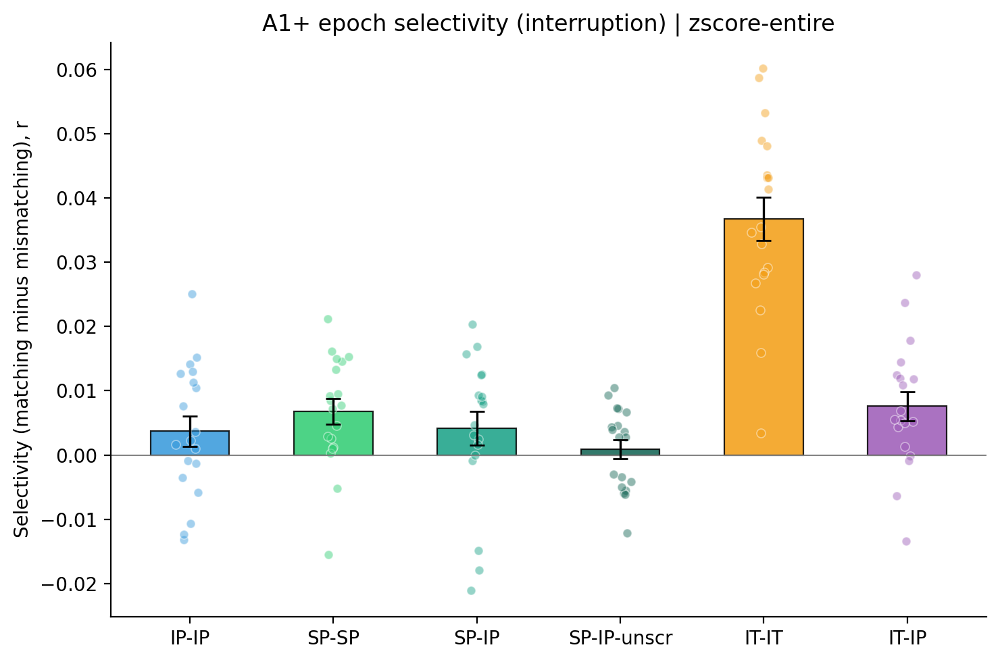
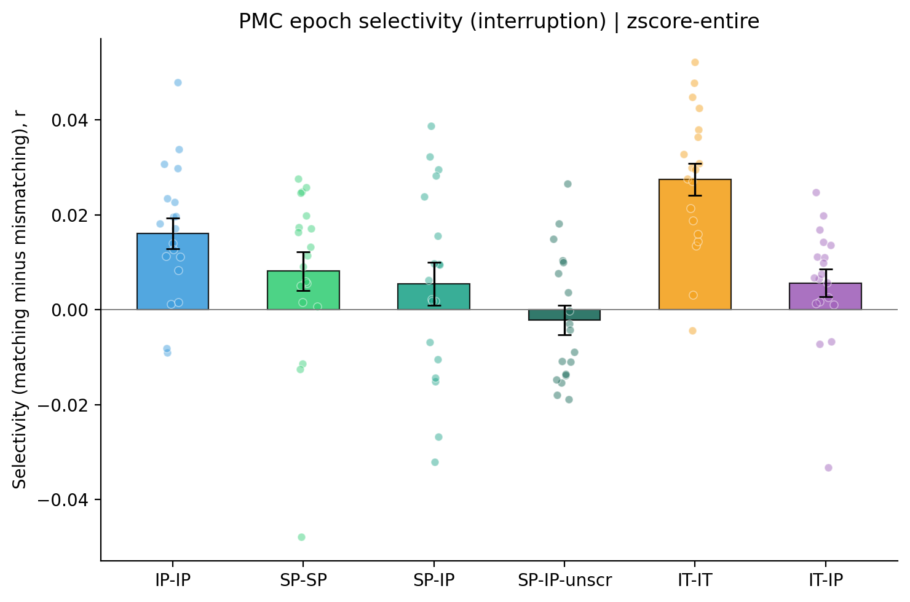
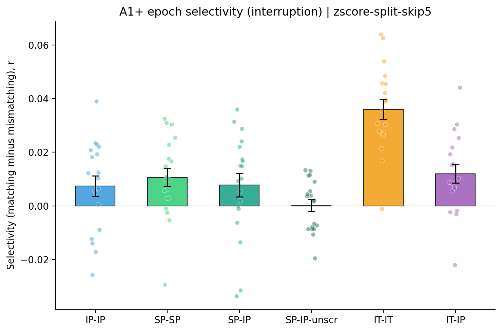
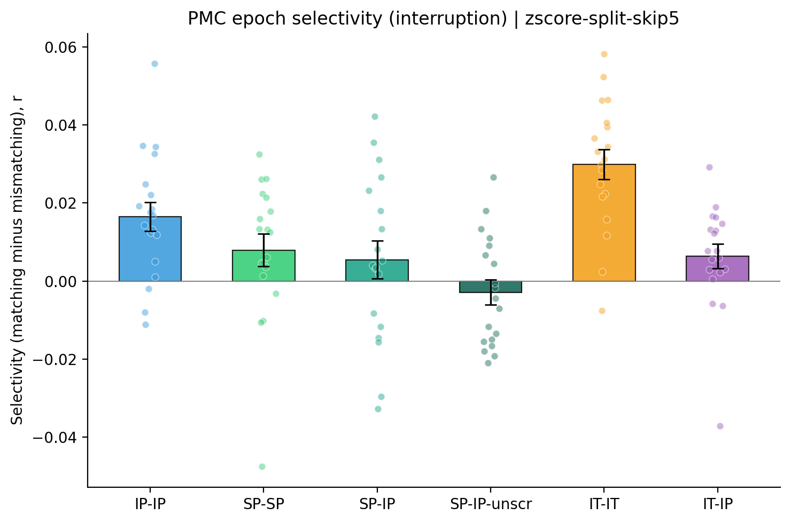
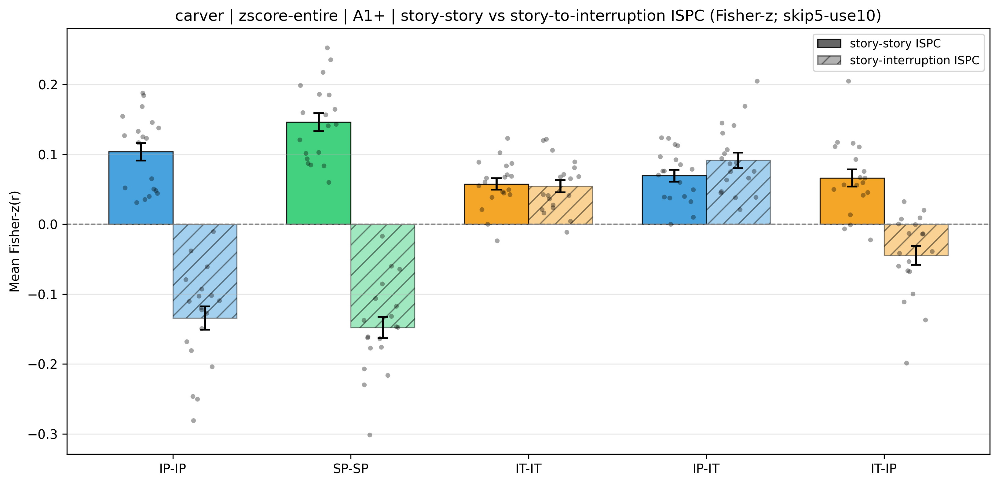
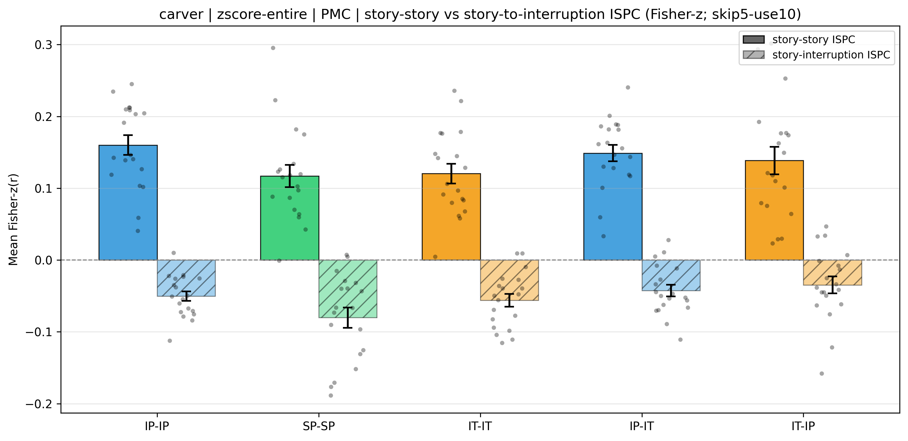
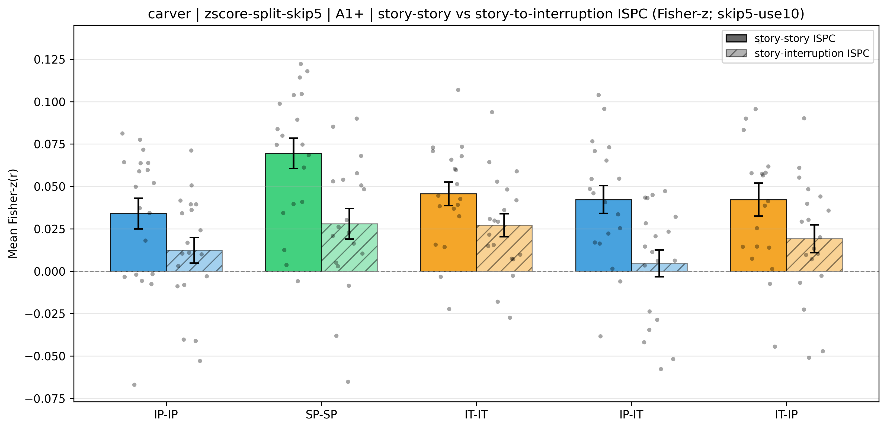
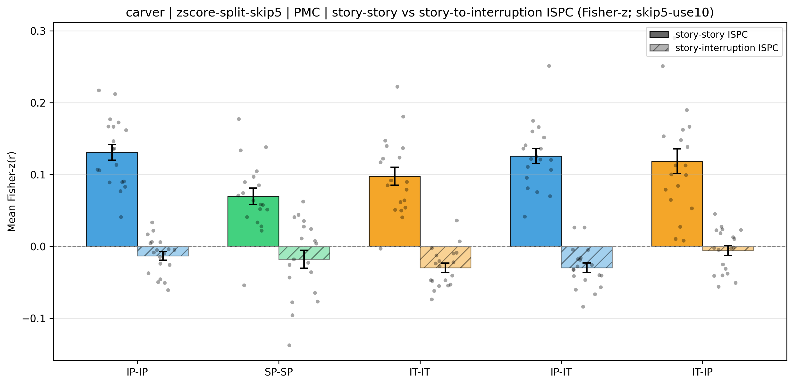

This is a preprocessing control for Result 3.1: the analysis windows, the pattern-similarity measure, the five inter-subject schemes, the statistics, and the report layout are identical to those used there; the only preprocessing change is that no temporal high-pass filter is applied to the multivoxel timecourses. Specifically, the multivoxel patterns were read from the fMRIPrep preprocessed output resampled to 3 mm isotropic space with spatial smoothing (4 mm Gaussian kernel) but without any high-pass filtering (no DCT, no linear detrending), matching the resampling and smoothing of the main analysis preprocessing pipeline.
Because no high-pass filter is applied, the appropriate per-voxel standardization is not obvious, so this report shows two standardization recipes in the order below. Within each recipe section, results are reported for two pre-selected regions: A1+ first (the strongest test case for losing the high-pass filter; its high-frequency stimulus-driven response is most exposed to low-frequency drift), and PMC second (the focal region of Result 3.1).
Each (recipe, ROI) cell reports the same statistics as Result 3.1: the group ISPC θ̂z with its standard error and the corresponding 95% confidence interval (θ̂z ± 1.96 SE), the primary sign-flip-on-jackknife permutation p, and n. Each table's legend defines its columns.
Before asking whether the story-to-interruption correlation is still negative without a high-pass filter, this section asks the prior question: does the interruption pattern still carry epoch-specific information at all? This is the Result 2.2 test, run on exactly the data used in the rest of this report. For every ordered pair of interruption epochs (i, j) we correlated the participant's pattern at epoch i with the across-participant average pattern at epoch j, over the ten TRs beginning 7.5 s after interruption onset. Participant selectivity is mean(matching, i = j) minus mean(mismatching, i ≠ j); the reported p is the one-sided within-participant label-shuffle permutation test (10000 iterations) and the 95% CI is a participant bootstrap (10000 iterations), matching Result 2.2 exactly. The two standardization recipes and the two regions are reported in the same order as the inversion sections below.
Schemes: IP-IP, SP-SP and IT-IT compare each participant with the average pattern of the other participants in the same condition. SP-IP and IT-IP compare each scrambled-pause or intact-theory-of-mind participant with the across-participant average of the intact-pause group at the interruption in the same serial position; intact-pause and intact-theory-of-mind share a timing table so that position is also the same point in the narrative, whereas the scrambled-pause story order differs, so a matching SP-IP entry pairs interruptions that follow different story segments. SP-IP-unscr repeats the SP-IP comparison after re-ordering the scrambled-pause epochs into the intact narrative sequence, so matching entries pair interruptions that follow the same story segment.
| Cond | Selectivity | SE | 95% CI | p (perm) | n | Mean matching r | Mean mismatching r | d |
|---|---|---|---|---|---|---|---|---|
| IP-IP | 0.0037 | 0.0024 | [-0.0009, 0.0082] | 0.2019 | 19 | 0.1773 | 0.1736 | 0.357 |
| SP-SP | 0.0068 | 0.0020 | [0.0029, 0.0104] | 0.0797 | 19 | 0.1756 | 0.1688 | 0.790 |
| SP-IP | 0.0041 | 0.0026 | [-0.0012, 0.0088] | 0.1966 | 19 | 0.1753 | 0.1712 | 0.361 |
| SP-IP-unscr | 0.0009 | 0.0015 | [-0.0019, 0.0037] | 0.4176 | 19 | 0.1723 | 0.1714 | 0.146 |
| IT-IT | 0.0367 | 0.0033 | [0.0304, 0.0431] | 1.00e-04 | 19 | 0.0734 | 0.0367 | 2.530 |
| IT-IP | 0.0076 | 0.0023 | [0.0032, 0.0118] | 0.0893 | 19 | -0.0554 | -0.0630 | 0.771 |

| Cond | Selectivity | SE | 95% CI | p (perm) | n | Mean matching r | Mean mismatching r | d |
|---|---|---|---|---|---|---|---|---|
| IP-IP | 0.0161 | 0.0033 | [0.0099, 0.0225] | 1.00e-04 | 19 | 0.0370 | 0.0209 | 1.135 |
| SP-SP | 0.0081 | 0.0041 | [-0.0006, 0.0152] | 0.0229 | 19 | 0.0342 | 0.0261 | 0.457 |
| SP-IP | 0.0054 | 0.0046 | [-0.0036, 0.0140] | 0.0696 | 19 | 0.0306 | 0.0252 | 0.273 |
| SP-IP-unscr | -0.0022 | 0.0031 | [-0.0078, 0.0037] | 0.6935 | 19 | 0.0235 | 0.0256 | -0.159 |
| IT-IT | 0.0275 | 0.0034 | [0.0209, 0.0339] | 1.00e-04 | 19 | 0.0678 | 0.0403 | 1.841 |
| IT-IP | 0.0057 | 0.0029 | [-0.0003, 0.0107] | 0.0394 | 19 | 0.0084 | 0.0028 | 0.452 |

| Cond | Selectivity | SE | 95% CI | p (perm) | n | Mean matching r | Mean mismatching r | d |
|---|---|---|---|---|---|---|---|---|
| IP-IP | 0.0074 | 0.0039 | [-0.0001, 0.0146] | 0.0013 | 19 | 0.0170 | 0.0096 | 0.440 |
| SP-SP | 0.0106 | 0.0035 | [0.0038, 0.0169] | 1.00e-04 | 19 | 0.0225 | 0.0118 | 0.705 |
| SP-IP | 0.0077 | 0.0044 | [-0.0011, 0.0159] | 0.0008 | 19 | 0.0192 | 0.0114 | 0.403 |
| SP-IP-unscr | 0.0001 | 0.0022 | [-0.0042, 0.0042] | 0.4786 | 19 | 0.0120 | 0.0119 | 0.009 |
| IT-IT | 0.0360 | 0.0036 | [0.0291, 0.0430] | 1.00e-04 | 19 | 0.0528 | 0.0168 | 2.269 |
| IT-IP | 0.0120 | 0.0034 | [0.0054, 0.0184] | 1.00e-04 | 19 | 0.0051 | -0.0068 | 0.811 |

| Cond | Selectivity | SE | 95% CI | p (perm) | n | Mean matching r | Mean mismatching r | d |
|---|---|---|---|---|---|---|---|---|
| IP-IP | 0.0165 | 0.0037 | [0.0096, 0.0239] | 1.00e-04 | 19 | 0.0187 | 0.0022 | 1.022 |
| SP-SP | 0.0079 | 0.0041 | [-0.0008, 0.0152] | 0.0043 | 19 | 0.0120 | 0.0040 | 0.440 |
| SP-IP | 0.0055 | 0.0048 | [-0.0040, 0.0146] | 0.0320 | 19 | 0.0089 | 0.0035 | 0.260 |
| SP-IP-unscr | -0.0029 | 0.0032 | [-0.0089, 0.0032] | 0.8013 | 19 | 0.0011 | 0.0039 | -0.204 |
| IT-IT | 0.0299 | 0.0038 | [0.0226, 0.0369] | 1.00e-04 | 19 | 0.0566 | 0.0267 | 1.801 |
| IT-IP | 0.0064 | 0.0031 | [-0.0001, 0.0119] | 0.0054 | 19 | 0.0044 | -0.0020 | 0.468 |

Bars: group-mean selectivity (matching minus mismatching r). Whiskers: ±SE across participants. Dots: participant selectivity values.
| Family | Cond | n | ISPC mean (r) | ISPC mean (Fisher-z, θ̂z) | SE | 95% CI | p (sign-flip) |
|---|---|---|---|---|---|---|---|
| story-story | IP-IP | 19 | 0.1019 | 0.1037 | 0.0125 | [0.0792, 0.1282] | 1.00e-04 |
| story-story | SP-SP | 19 | 0.1433 | 0.1460 | 0.0129 | [0.1208, 0.1712] | 1.00e-04 |
| story-story | IT-IT | 19 | 0.0570 | 0.0576 | 0.0079 | [0.0420, 0.0731] | 1.00e-04 |
| story-story | IP-IT | 19 | 0.0684 | 0.0694 | 0.0084 | [0.0528, 0.0860] | 1.00e-04 |
| story-story | IT-IP | 19 | 0.0651 | 0.0660 | 0.0122 | [0.0421, 0.0900] | 1.00e-04 |
| story-interruption | IP-IP | 19 | -0.1311 | -0.1344 | 0.0166 | [-0.1669, -0.1018] | 1.00e-04 |
| story-interruption | SP-SP | 19 | -0.1443 | -0.1476 | 0.0152 | [-0.1775, -0.1178] | 1.00e-04 |
| story-interruption | IT-IT | 19 | 0.0538 | 0.0544 | 0.0087 | [0.0373, 0.0715] | 1.0000 |
| story-interruption | IP-IT | 19 | 0.0896 | 0.0914 | 0.0112 | [0.0695, 0.1133] | 1.0000 |
| story-interruption | IT-IP | 19 | -0.0435 | -0.0445 | 0.0136 | [-0.0712, -0.0178] | 0.0014 |

| Family | Cond | n | ISPC mean (r) | ISPC mean (Fisher-z, θ̂z) | SE | 95% CI | p (sign-flip) |
|---|---|---|---|---|---|---|---|
| story-story | IP-IP | 19 | 0.1537 | 0.1601 | 0.0136 | [0.1335, 0.1868] | 1.00e-04 |
| story-story | SP-SP | 19 | 0.1135 | 0.1169 | 0.0154 | [0.0867, 0.1471] | 1.00e-04 |
| story-story | IT-IT | 19 | 0.1148 | 0.1204 | 0.0137 | [0.0935, 0.1473] | 1.00e-04 |
| story-story | IP-IT | 19 | 0.1428 | 0.1488 | 0.0114 | [0.1264, 0.1712] | 1.00e-04 |
| story-story | IT-IP | 19 | 0.1315 | 0.1385 | 0.0191 | [0.1011, 0.1759] | 1.00e-04 |
| story-interruption | IP-IP | 19 | -0.0495 | -0.0503 | 0.0067 | [-0.0635, -0.0372] | 1.00e-04 |
| story-interruption | SP-SP | 19 | -0.0783 | -0.0801 | 0.0141 | [-0.1079, -0.0524] | 5.00e-04 |
| story-interruption | IT-IT | 19 | -0.0549 | -0.0560 | 0.0089 | [-0.0734, -0.0386] | 4.00e-04 |
| story-interruption | IP-IT | 19 | -0.0415 | -0.0425 | 0.0081 | [-0.0583, -0.0267] | 1.00e-04 |
| story-interruption | IT-IP | 19 | -0.0341 | -0.0347 | 0.0117 | [-0.0575, -0.0118] | 0.0040 |

| Family | Cond | n | ISPC mean (r) | ISPC mean (Fisher-z, θ̂z) | SE | 95% CI | p (sign-flip) |
|---|---|---|---|---|---|---|---|
| story-story | IP-IP | 19 | 0.0336 | 0.0340 | 0.0090 | [0.0163, 0.0517] | 0.0067 |
| story-story | SP-SP | 19 | 0.0686 | 0.0695 | 0.0090 | [0.0519, 0.0870] | 1.00e-04 |
| story-story | IT-IT | 19 | 0.0453 | 0.0457 | 0.0069 | [0.0321, 0.0593] | 3.00e-04 |
| story-story | IP-IT | 19 | 0.0418 | 0.0422 | 0.0082 | [0.0261, 0.0583] | 2.00e-04 |
| story-story | IT-IP | 19 | 0.0417 | 0.0422 | 0.0097 | [0.0232, 0.0612] | 3.00e-04 |
| story-interruption | IP-IP | 19 | 0.0123 | 0.0124 | 0.0076 | [-0.0024, 0.0272] | 0.8471 |
| story-interruption | SP-SP | 19 | 0.0277 | 0.0279 | 0.0090 | [0.0102, 0.0457] | 0.9942 |
| story-interruption | IT-IT | 19 | 0.0269 | 0.0271 | 0.0068 | [0.0139, 0.0404] | 0.9974 |
| story-interruption | IP-IT | 19 | 0.0046 | 0.0046 | 0.0079 | [-0.0108, 0.0200] | 0.7207 |
| story-interruption | IT-IP | 19 | 0.0191 | 0.0192 | 0.0082 | [0.0031, 0.0353] | 0.9839 |

| Family | Cond | n | ISPC mean (r) | ISPC mean (Fisher-z, θ̂z) | SE | 95% CI | p (sign-flip) |
|---|---|---|---|---|---|---|---|
| story-story | IP-IP | 19 | 0.1268 | 0.1311 | 0.0110 | [0.1095, 0.1527] | 1.00e-04 |
| story-story | SP-SP | 19 | 0.0682 | 0.0698 | 0.0115 | [0.0472, 0.0924] | 1.00e-04 |
| story-story | IT-IT | 19 | 0.0937 | 0.0977 | 0.0124 | [0.0734, 0.1220] | 1.00e-04 |
| story-story | IP-IT | 19 | 0.1215 | 0.1258 | 0.0106 | [0.1050, 0.1466] | 1.00e-04 |
| story-story | IT-IP | 19 | 0.1131 | 0.1186 | 0.0172 | [0.0849, 0.1524] | 1.00e-04 |
| story-interruption | IP-IP | 19 | -0.0129 | -0.0131 | 0.0061 | [-0.0249, -0.0012] | 0.0346 |
| story-interruption | SP-SP | 19 | -0.0174 | -0.0177 | 0.0124 | [-0.0421, 0.0067] | 0.1470 |
| story-interruption | IT-IT | 19 | -0.0291 | -0.0295 | 0.0063 | [-0.0419, -0.0172] | 0.0038 |
| story-interruption | IP-IT | 19 | -0.0288 | -0.0295 | 0.0065 | [-0.0423, -0.0167] | 2.00e-04 |
| story-interruption | IT-IP | 19 | -0.0057 | -0.0056 | 0.0069 | [-0.0192, 0.0081] | 0.2168 |

Bars: θ̂z (Fisher-z group mean). Whiskers: ±SE. Dots: subject-mean Fisher-z values. Solid = story-story; hatched = story-interruption. IP-IP, SP-SP, IT-IT compare each participant with the average pattern of the other participants in the same condition; IP-IT and IT-IP compare each participant with the across-participant average of the other condition's group.